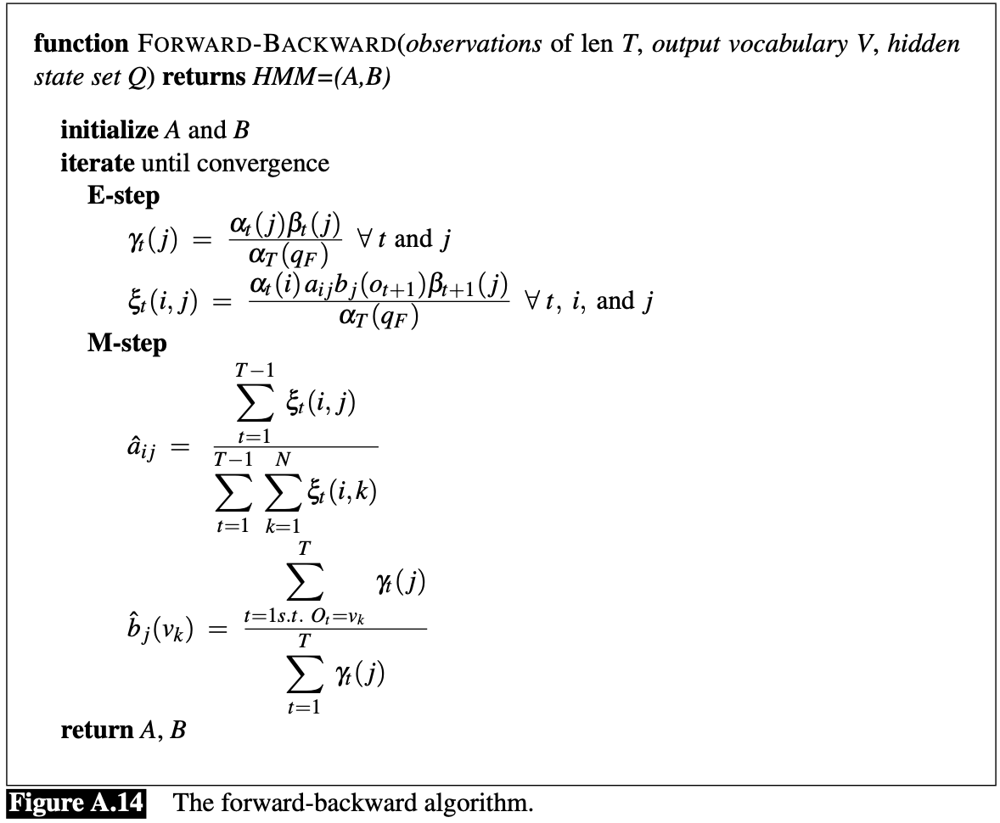
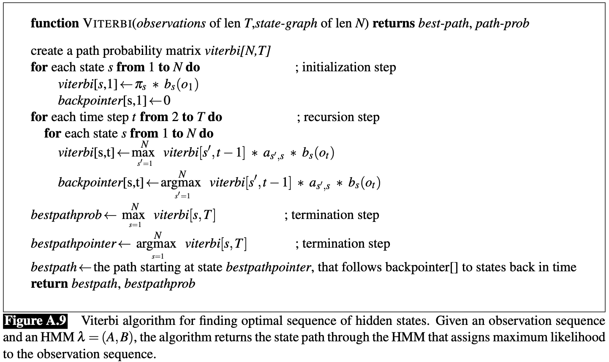

Hidden Markov Models are used for probabilistic sequence classification. This model can tell us about the state sequence probabilities. In essence, the transition likelihoods between states over time, which include the likelihood of a state persisting over time (indicated by an self-referential arrow).
HMMs help to map observations to explanations of these observations, known as hidden causes/states/classes. We consider the observations to be probabilistically dependent on the hidden, unobservable component (states/classes/causes).
The figure below depicts the Conditional Probability Distribution of the next state s' given the current state s, known as the transition model P(s'|s)
Figure from "Speech and Language Processing" by D. Jurafsky 2023.
Named Entity Recognition (NER) is a natural language processing task that aims to identify the entities (individuals, institutions, ideas, etc.) in a given chunk of text.
The challenges are to detect the names, and then to classify them properly (e.g. detecting "Bank of America" as an entity, and then classifying it as an institutional bank, not referring to the country within the name).
Some background topics:
We love NLP!
Noun, Verb, Pronoun
Using Part of Speech Tagging (POS) is sequentially labelling the words by their part of speech. If we collect enough data on the underlying part-of-speech sequences, we can get a good idea for the patterns behind sentences.
How are Hidden Markov Models used in named entity recognition?
Sequence Modeling: We don't know the (hidden) parts-of-speech for the sequence of words, a.k.a. our sentence, but we can see the words (observations). The named entity tag (eg. Person, Organization, etc.) is, like the part of speech, considered the hidden state. The sequence of words in a sentence forms the sequence of observations, and the corresponding sequence of named entity tags forms the hidden state sequences.
Training the Model: Through a well-labeled corpus of text, we train the model with a labeled dataset to get it familiar with some of the sequential patterns:
Decoding: Once trained, the HMM can be used to predict the most likely sequence of hidden states (entity tags) for a new sequence of observations (words in a sentence). This is typically done using algorithms like the Viterbi algorithm, which efficiently finds the most likely sequence of hidden states based on the observed data and the model’s parameters.
The Viterbi algorithm effectively navigates through the exponential number of possible state sequences to efficiently find the most probable sequence.
Hidden Markov Models are a staple in probabilistic sequence classification, particularly used in the context of Natural Language Processing (NLP) for tasks like Named Entity Recognition (NER). They serve as a powerful tool for modeling the probability distributions of sequences, providing a framework for understanding the sequential data by relating observable events to hidden states.
NER is an NLP task where HMMs are utilized to identify and classify named entities—like people, organizations, or locations—in text. The complexity of language makes NER a challenging problem. HMMs address this by allowing us to statistically model sequences of words and the corresponding entities they represent, even when these entities are not explicitly mentioned.
The Viterbi Algorithm is a dynamic programming approach to decode the sequence of hidden states in an HMM. This algorithm calculates the most likely sequence of hidden states given a sequence of observed events. It does so efficiently by recursively determining the maximum probability of any sequence that ends at each state, using the transition probabilities between states and the probabilities of observations given states.
As an integral part of the HMM framework, the Viterbi Algorithm's ability to find the most probable path through the state space is crucial for applications like speech recognition, handwriting recognition, and of course, NER.
Training an HMM involves learning the model's parameters—the state transition probabilities and the observation emission probabilities. The Forward-Backward Algorithm, also known as the Baum-Welch Algorithm, is a special case of the Expectation-Maximization algorithm used for this purpose. It iteratively improves the model's parameters by computing forward and backward probabilities and re-estimating the transition and emission probabilities to maximize the likelihood of the observed sequence.
Figure: Viterbi trellis illustrating the computation of the most likely path through the hidden states.
Figure: The Forward-Backward Algorithm for training Hidden Markov Models.
Figure: The Viterbi Algorithm for decoding Hidden Markov Models.
It should be noted that the algorithms and models covered in this page are not the best